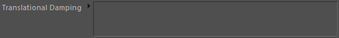
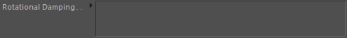

Dynamics
Apply to original mesh
In case this tag sits on a Mesh or Volume node, this will apply the internal mesh motions back to the original C4D mesh. Usually you want this.
Note: This option does not work for MoGraph Cloners used in a MultiMesh. Use our specific MoGraph Effector for this instead.
Activate on collision
If this rigid-body is dynamic, it will only start being dynamic if collisions (with other rigid-bodies or particles) are encountered.
Activate on speed..
If this rigid-body is dynamic, it will only start being dynamic if it reaches a certain velocity.
Threshold
Defines the velocity threshold for "Activate on speed..". This speed threshold is given in physical simulation space.
Initial Alignment
Here you can define an Alignment node to provide the objects with a start direction.
Speed
The initial speed if an alignment node is linked in "Initial Alignment". This speed value is given in physical simulation space.
Translational Damping
General damping of rigid-body movements.
Rotational Damping
General damping of rigid-body rotations.
Translational Factor
General multipliers for rigid-body movements.
Rotational Factor
General multipliers for rigid-body rotations.
Dynamics::Constraints
Translational Damping

These constraints control the translational damping.
Rotational Damping

These constraints control the rotational damping.